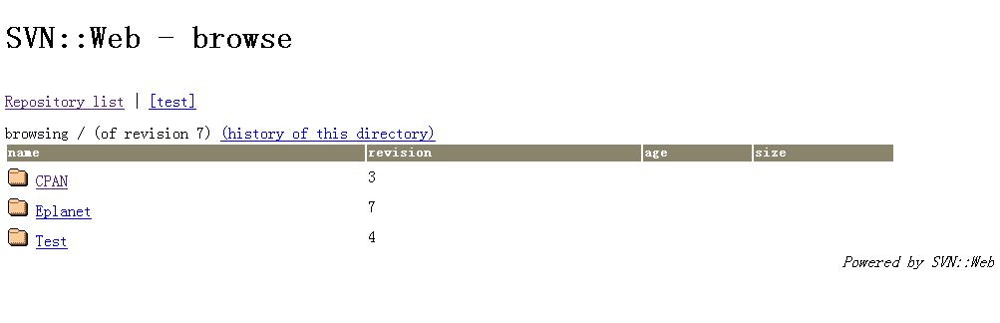

Category: InstallNote Keywords: SVN::Web
安装 SVN::Web 之前要安装 subversion 和它的 pl 文件。将 pl 文件解压缩，拷贝里面的 site/lib 下的 SVN 和 auto 目录到你的 Perl 安装目录的 site/lib 下。
然后启动命令行：
然后修改 cgi-bin\svnweb 目录下的 config.yaml 修改里面的：
C:\>cpan SVN::Web
C:\>cd cgi-bin\svnweb # 这个是你的 apache2 的 cgi-bin 目录下，建一个 svnweb 目录
C:\>svnweb-install # 这个文件在你的 Perl 安装目录的 bin 下。一般加 $Perl/bin 目录到 PATH
可以访问： http://localhost/cgi-bin/svnweb/index.cgi/test最后的截图如下：
repos: # 去掉前面注释
test: 'E:/repos' # 你自己的 repos 目录
# ...
style: 'http://localhost/svnweb/css/common.css' # 可以访问 css 的地址
